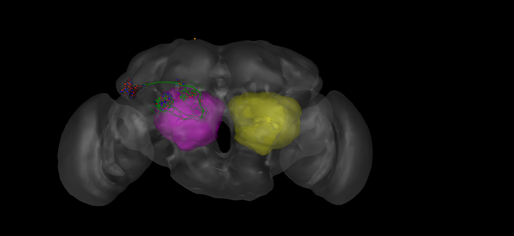

Starting a local neuroglancer session with FAFB dataset¶
This example shows how to start a local neuroglancer session and further add neurons, synapses, neuropil meshes from a public catmaid instance¶
Import neccesary library modules now¶
[1]:
import navis
import fafbseg
import pymaid
[2]:
import pandas as pd
import numpy as np
import os
from copy import deepcopy
[3]:
import io
from PIL import Image
[4]:
from pyroglancer.layers import create_nglayer, setlayerproperty
from pyroglancer.localserver import startdataserver, closedataserver
from pyroglancer.ngviewer import openviewer, closeviewer,setviewerstate, get_ngscreenshot
from pyroglancer.ngspaces import create_ngspace
from pyroglancer.createconfig import createconfig
Set configurations to fetch from data from CATMAID¶
[5]:
publicurl = 'https://fafb.catmaid.virtualflybrain.org/'
[6]:
working_rm = pymaid.CatmaidInstance(publicurl, api_token=None, project_id = 1)
INFO : Global CATMAID instance set. Caching is ON. (pymaid)
INFO - 2021-05-19 22:00:43,902 - client - Global CATMAID instance set. Caching is ON.
Get sample skids and neuropil meshes from CATMAID¶
[7]:
sample_skids = ['40637','27295','57311','2863104','57323']
[8]:
catmiad_neuronlist=pymaid.get_neurons(sample_skids,remote_instance = working_rm)
Make nrn: 0%| | 0/5 [00:00<?, ?it/s] INFO - 2021-05-19 22:00:44,720 - utils - NumExpr defaulting to 8 threads.
[9]:
vols = pymaid.get_volume(['AL_L', 'AL_R'], color=(255, 0, 0, .2))
[10]:
vols['AL_R'].id = 200
vols['AL_L'].id = 300
vols
[10]:
{'AL_R': <navis.Volume(name=AL_R, id=200, color=(255, 0, 0, 0.2), vertices.shape=(622, 3), faces.shape=(1240, 3))>,
'AL_L': <navis.Volume(name=AL_L, id=300, color=(255, 0, 0, 0.2), vertices.shape=(612, 3), faces.shape=(1228, 3))>}
Start the dataserver to host precomputed data..¶
[11]:
startdataserver()
Serving data from:
Start a basic neuroglancer local session with all FAFB configurations..¶
[12]:
configdata = [dict(
ngspace='FAFB',
dimension=dict(x=1, y=1,z=1,units='um'),
voxelsize=dict(x=4,y=4,z=40,units='nm'),
layers=dict(
fafb_v14_clahe=dict(
type='image',
source='precomputed://gs://neuroglancer-fafb-data/fafb_v14/fafb_v14_clahe'),
fafb_surf=dict(
type='surfacemesh',
source='vtk://https://storage.googleapis.com/neuroglancer-fafb-data/elmr-data/FAFB.surf.vtk.gz'
))
)]
/var/folders/_l/lrfvj_8j3ps0c37ncbr3c8dh0000gn/T/tmp37r6z4p7
Serving directory at http://127.0.0.1:8000
[13]:
configfileloc = '/Users/sri/.pyroglancer/config_temp.yml'
[14]:
createconfig(configdata, configfileloc)
setting default config file loc
[15]:
layer_kws = {'ngspace': 'FAFB'}
[16]:
create_ngspace(layer_kws)
config file loc is at: None
using default location at: /Users/sri/.pyroglancer/config_temp.yml
Neuroglancer viewer created at: http://127.0.0.1:58817/v/a51569d4574735f355dd0a0f034e16ffafb1eae9/
config file loc is at: None
using default location at: /Users/sri/.pyroglancer/config_temp.yml
Dimensions are in : FAFB
Layer created: image
config file loc is at: None
using default location at: /Users/sri/.pyroglancer/config_temp.yml
Using layout : xy-3d
config file loc is at: None
using default location at: /Users/sri/.pyroglancer/config_temp.yml
Dimensions are in : FAFB
Layer created: surfacemesh
config file loc is at: None
using default location at: /Users/sri/.pyroglancer/config_temp.yml
Using layout : xy-3d
config file loc is at: None
using default location at: /Users/sri/.pyroglancer/config_temp.yml
Dimensions are in : FAFB
Layer created: synapsepred
config file loc is at: None
using default location at: /Users/sri/.pyroglancer/config_temp.yml
Using layout : xy-3d
config file loc is at: None
using default location at: /Users/sri/.pyroglancer/config_temp.yml
Dimensions are in : FAFB
Layer created: segmentation
config file loc is at: None
using default location at: /Users/sri/.pyroglancer/config_temp.yml
Using layout : xy-3d
Add skids to neuroglancer layers..¶
[17]:
tmpviewer = create_nglayer(layer_kws = {'type': 'skeletons',
'source': catmiad_neuronlist,
'name':'catmaid_skels',
'color': 'green',
'alpha': 0.5})
config file loc is at: None
using default location at: /Users/sri/.pyroglancer/config_temp.yml
Dimensions are in : FAFB
Layer created: skeletons
/private/var/folders/_l/lrfvj_8j3ps0c37ncbr3c8dh0000gn/T/tmp37r6z4p7/precomputed/catmaid_skels/skeletons/40637
/private/var/folders/_l/lrfvj_8j3ps0c37ncbr3c8dh0000gn/T/tmp37r6z4p7/precomputed/catmaid_skels/skeletons/27295
/private/var/folders/_l/lrfvj_8j3ps0c37ncbr3c8dh0000gn/T/tmp37r6z4p7/precomputed/catmaid_skels/skeletons/57311
/private/var/folders/_l/lrfvj_8j3ps0c37ncbr3c8dh0000gn/T/tmp37r6z4p7/precomputed/catmaid_skels/skeletons/2863104
/private/var/folders/_l/lrfvj_8j3ps0c37ncbr3c8dh0000gn/T/tmp37r6z4p7/precomputed/catmaid_skels/skeletons/57323
creating: /private/var/folders/_l/lrfvj_8j3ps0c37ncbr3c8dh0000gn/T/tmp37r6z4p7/precomputed/catmaid_skels/skeletons/seg_props
Using layout : xy-3d
127.0.0.1 - - [19/May/2021 22:00:46] "GET /precomputed/catmaid_skels/skeletons/info HTTP/1.1" 200 -
127.0.0.1 - - [19/May/2021 22:00:46] "GET /precomputed/catmaid_skels/skeletons/seg_props/info HTTP/1.1" 200 -
Add synapses to neuroglancer layers..¶
[18]:
tmpviewer = create_nglayer(layer_kws = {'type': 'synapses',
'linked_layername': 'catmaid_skels',
'source': catmiad_neuronlist})
config file loc is at: None
using default location at: /Users/sri/.pyroglancer/config_temp.yml
Dimensions are in : FAFB
Layer created: synapses
config file loc is at: None
using default location at: /Users/sri/.pyroglancer/config_temp.yml
Dimensions are in : FAFB
flushing stuff..
presynapse stuff at: /private/var/folders/_l/lrfvj_8j3ps0c37ncbr3c8dh0000gn/T/tmp37r6z4p7 /precomputed/catmaid_skels/presynapses
postsynapse stuff at: /private/var/folders/_l/lrfvj_8j3ps0c37ncbr3c8dh0000gn/T/tmp37r6z4p7 /precomputed/catmaid_skels/postsynapses
synapses info path: /private/var/folders/_l/lrfvj_8j3ps0c37ncbr3c8dh0000gn/T/tmp37r6z4p7/precomputed/catmaid_skels
creating: /private/var/folders/_l/lrfvj_8j3ps0c37ncbr3c8dh0000gn/T/tmp37r6z4p7/precomputed/catmaid_skels/presynapses
creating: /private/var/folders/_l/lrfvj_8j3ps0c37ncbr3c8dh0000gn/T/tmp37r6z4p7/precomputed/catmaid_skels/postsynapses
Adding neuron: 40637
making: /private/var/folders/_l/lrfvj_8j3ps0c37ncbr3c8dh0000gn/T/tmp37r6z4p7/precomputed/catmaid_skels/presynapses/presynapses_cell/40637
making: /private/var/folders/_l/lrfvj_8j3ps0c37ncbr3c8dh0000gn/T/tmp37r6z4p7/precomputed/catmaid_skels/postsynapses/postsynapses_cell/40637
Adding neuron: 27295
making: /private/var/folders/_l/lrfvj_8j3ps0c37ncbr3c8dh0000gn/T/tmp37r6z4p7/precomputed/catmaid_skels/presynapses/presynapses_cell/27295
making: /private/var/folders/_l/lrfvj_8j3ps0c37ncbr3c8dh0000gn/T/tmp37r6z4p7/precomputed/catmaid_skels/postsynapses/postsynapses_cell/27295
Adding neuron: 57311
making: /private/var/folders/_l/lrfvj_8j3ps0c37ncbr3c8dh0000gn/T/tmp37r6z4p7/precomputed/catmaid_skels/presynapses/presynapses_cell/57311
making: /private/var/folders/_l/lrfvj_8j3ps0c37ncbr3c8dh0000gn/T/tmp37r6z4p7/precomputed/catmaid_skels/postsynapses/postsynapses_cell/57311
Adding neuron: 2863104
making: /private/var/folders/_l/lrfvj_8j3ps0c37ncbr3c8dh0000gn/T/tmp37r6z4p7/precomputed/catmaid_skels/presynapses/presynapses_cell/2863104
making: /private/var/folders/_l/lrfvj_8j3ps0c37ncbr3c8dh0000gn/T/tmp37r6z4p7/precomputed/catmaid_skels/postsynapses/postsynapses_cell/2863104
Adding neuron: 57323
making: /private/var/folders/_l/lrfvj_8j3ps0c37ncbr3c8dh0000gn/T/tmp37r6z4p7/precomputed/catmaid_skels/presynapses/presynapses_cell/57323
making: /private/var/folders/_l/lrfvj_8j3ps0c37ncbr3c8dh0000gn/T/tmp37r6z4p7/precomputed/catmaid_skels/postsynapses/postsynapses_cell/57323
Using layout : xy-3d
127.0.0.1 - - [19/May/2021 22:01:00] "GET /precomputed/catmaid_skels/presynapses/info HTTP/1.1" 200 -
127.0.0.1 - - [19/May/2021 22:01:00] "GET /precomputed/catmaid_skels/postsynapses/info HTTP/1.1" 200 -
127.0.0.1 - - [19/May/2021 22:01:00] code 404, message File not found
127.0.0.1 - - [19/May/2021 22:01:00] "GET /precomputed/catmaid_skels/presynapses/spatial0/0_0_0 HTTP/1.1" 404 -
127.0.0.1 - - [19/May/2021 22:01:00] code 404, message File not found
127.0.0.1 - - [19/May/2021 22:01:00] "GET /precomputed/catmaid_skels/postsynapses/spatial0/0_0_0 HTTP/1.1" 404 -
Add neuropil meshes to neuroglancer layers..¶
[19]:
tmpviewer = create_nglayer(layer_kws = {'type': 'volumes','source': [vols['AL_R'],vols['AL_L']],
'name': 'neuropils','color': ['magenta', 'blue'], 'alpha': 0.3})
config file loc is at: None
using default location at: /Users/sri/.pyroglancer/config_temp.yml
Dimensions are in : FAFB
Layer created: volumes
mesh/200
Seg id is: 200
Full filepath: /private/var/folders/_l/lrfvj_8j3ps0c37ncbr3c8dh0000gn/T/tmp37r6z4p7/precomputed/neuropils/mesh/200
mesh/300
Seg id is: 300
Full filepath: /private/var/folders/_l/lrfvj_8j3ps0c37ncbr3c8dh0000gn/T/tmp37r6z4p7/precomputed/neuropils/mesh/300
creating: /private/var/folders/_l/lrfvj_8j3ps0c37ncbr3c8dh0000gn/T/tmp37r6z4p7/precomputed/neuropils/mesh/segment_properties
creating: /private/var/folders/_l/lrfvj_8j3ps0c37ncbr3c8dh0000gn/T/tmp37r6z4p7/precomputed/neuropils/mesh/segment_names
Using layout : xy-3d
127.0.0.1 - - [19/May/2021 22:01:02] "GET /precomputed/neuropils/mesh/info HTTP/1.1" 200 -
127.0.0.1 - - [19/May/2021 22:01:03] "GET /precomputed/neuropils/mesh/segment_properties/info HTTP/1.1" 200 -
Add annotations meshes to neuroglancer layers..¶
[20]:
temp_pts = pd.DataFrame([[123072, 47001, 3375]],columns=['x','y','z'])
temp_pts = pd.DataFrame([[123072, 47001, 3375], [120000, 17001, 3000]], columns=['x', 'y', 'z'])
temp_pts['description'] = ['center_pt','above_pt']
[21]:
#plot landmarks..
tmpviewer = create_nglayer(layer_kws = {'type': 'points','name': 'landmarks',
"annotationstatetype": 'precomputed',
'source': temp_pts,'color': 'orange'})
config file loc is at: None
using default location at: /Users/sri/.pyroglancer/config_temp.yml
Dimensions are in : FAFB
Layer created: points
config file loc is at: None
using default location at: /Users/sri/.pyroglancer/config_temp.yml
Dimensions are in : FAFB
using default location at: /Users/sri/.pyroglancer/config_temp.yml
using voxel space with scale: [4, 4, 40]
creating: /private/var/folders/_l/lrfvj_8j3ps0c37ncbr3c8dh0000gn/T/tmp37r6z4p7/precomputed/landmarks
/private/var/folders/_l/lrfvj_8j3ps0c37ncbr3c8dh0000gn/T/tmp37r6z4p7/precomputed/landmarks/spatial0/0_0_0
/private/var/folders/_l/lrfvj_8j3ps0c37ncbr3c8dh0000gn/T/tmp37r6z4p7/precomputed/landmarks/by_id/0
/private/var/folders/_l/lrfvj_8j3ps0c37ncbr3c8dh0000gn/T/tmp37r6z4p7/precomputed/landmarks/by_id/1
Using layout : xy-3d
127.0.0.1 - - [19/May/2021 22:01:03] "GET /precomputed/landmarks/info HTTP/1.1" 200 -
127.0.0.1 - - [19/May/2021 22:01:04] "GET /precomputed/landmarks/spatial0/0_0_0 HTTP/1.1" 200 -
Set settings of the viewer/segments¶
[22]:
tmpviewer = setlayerproperty(tmpviewer, property_kws = {'name': 'synapses_buhmann2019','visibility': False})
[23]:
tmpviewer = setlayerproperty(tmpviewer, property_kws = {'name': 'catmaid_skels','segments': sample_skids})
127.0.0.1 - - [19/May/2021 22:01:05] "GET /precomputed/catmaid_skels/skeletons/2863104 HTTP/1.1" 200 -
127.0.0.1 - - [19/May/2021 22:01:05] "GET /precomputed/catmaid_skels/skeletons/57323 HTTP/1.1" 200 -
127.0.0.1 - - [19/May/2021 22:01:05] "GET /precomputed/catmaid_skels/skeletons/40637 HTTP/1.1" 200 -
127.0.0.1 - - [19/May/2021 22:01:05] "GET /precomputed/catmaid_skels/skeletons/57311 HTTP/1.1" 200 -
127.0.0.1 - - [19/May/2021 22:01:05] "GET /precomputed/catmaid_skels/skeletons/27295 HTTP/1.1" 200 -
127.0.0.1 - - [19/May/2021 22:01:05] "GET /precomputed/catmaid_skels/postsynapses/postsynapses_cell/2863104 HTTP/1.1" 200 -
127.0.0.1 - - [19/May/2021 22:01:05] "GET /precomputed/catmaid_skels/postsynapses/postsynapses_cell/40637 HTTP/1.1" 200 -
127.0.0.1 - - [19/May/2021 22:01:05] "GET /precomputed/catmaid_skels/postsynapses/postsynapses_cell/27295 HTTP/1.1" 200 -
127.0.0.1 - - [19/May/2021 22:01:05] "GET /precomputed/catmaid_skels/postsynapses/postsynapses_cell/57323 HTTP/1.1" 200 -
127.0.0.1 - - [19/May/2021 22:01:05] "GET /precomputed/catmaid_skels/postsynapses/postsynapses_cell/57311 HTTP/1.1" 200 -
127.0.0.1 - - [19/May/2021 22:01:05] "GET /precomputed/catmaid_skels/presynapses/presynapses_cell/2863104 HTTP/1.1" 200 -
127.0.0.1 - - [19/May/2021 22:01:05] "GET /precomputed/catmaid_skels/presynapses/presynapses_cell/57311 HTTP/1.1" 200 -
127.0.0.1 - - [19/May/2021 22:01:05] "GET /precomputed/catmaid_skels/presynapses/presynapses_cell/40637 HTTP/1.1" 200 -
127.0.0.1 - - [19/May/2021 22:01:05] "GET /precomputed/catmaid_skels/presynapses/presynapses_cell/27295 HTTP/1.1" 200 -
127.0.0.1 - - [19/May/2021 22:01:05] "GET /precomputed/catmaid_skels/presynapses/presynapses_cell/57323 HTTP/1.1" 200 -
[24]:
tmpviewer = setlayerproperty(tmpviewer, property_kws = {'name': 'neuropils','segments': [vols['AL_R'].id, vols['AL_L'].id]})
127.0.0.1 - - [19/May/2021 22:01:10] "GET /precomputed/neuropils/mesh/300:0 HTTP/1.1" 200 -
127.0.0.1 - - [19/May/2021 22:01:10] "GET /precomputed/neuropils/mesh/200:0 HTTP/1.1" 200 -
127.0.0.1 - - [19/May/2021 22:01:10] "GET /precomputed/neuropils/mesh/200 HTTP/1.1" 200 -
127.0.0.1 - - [19/May/2021 22:01:10] "GET /precomputed/neuropils/mesh/300 HTTP/1.1" 200 -
[25]:
tmpviewer = setviewerstate(axis_lines = False, bounding_box = False)
[26]:
#adjust the zoom factor a bit according your settings, screen, viewer state before etc.
tmpviewer = setviewerstate(tmpviewer, axis_lines=False, bounding_box=False, layout='3d', zoom_factor = 208000)
127.0.0.1 - - [19/May/2021 22:01:59] "GET /precomputed/catmaid_skels/skeletons/info HTTP/1.1" 304 -
127.0.0.1 - - [19/May/2021 22:01:59] "GET /precomputed/catmaid_skels/presynapses/info HTTP/1.1" 304 -
127.0.0.1 - - [19/May/2021 22:01:59] "GET /precomputed/catmaid_skels/postsynapses/info HTTP/1.1" 304 -
127.0.0.1 - - [19/May/2021 22:01:59] "GET /precomputed/neuropils/mesh/info HTTP/1.1" 304 -
127.0.0.1 - - [19/May/2021 22:01:59] "GET /precomputed/landmarks/info HTTP/1.1" 304 -
127.0.0.1 - - [19/May/2021 22:01:59] "GET /precomputed/catmaid_skels/skeletons/seg_props/info HTTP/1.1" 304 -
127.0.0.1 - - [19/May/2021 22:01:59] "GET /precomputed/neuropils/mesh/segment_properties/info HTTP/1.1" 304 -
127.0.0.1 - - [19/May/2021 22:01:59] "GET /precomputed/catmaid_skels/presynapses/presynapses_cell/57311 HTTP/1.1" 304 -
127.0.0.1 - - [19/May/2021 22:01:59] "GET /precomputed/catmaid_skels/presynapses/presynapses_cell/40637 HTTP/1.1" 304 -
127.0.0.1 - - [19/May/2021 22:01:59] "GET /precomputed/catmaid_skels/postsynapses/postsynapses_cell/57311 HTTP/1.1" 304 -
127.0.0.1 - - [19/May/2021 22:01:59] "GET /precomputed/catmaid_skels/presynapses/presynapses_cell/57323 HTTP/1.1" 304 -
127.0.0.1 - - [19/May/2021 22:01:59] "GET /precomputed/catmaid_skels/postsynapses/postsynapses_cell/57323 HTTP/1.1" 304 -
127.0.0.1 - - [19/May/2021 22:01:59] "GET /precomputed/catmaid_skels/postsynapses/postsynapses_cell/27295 HTTP/1.1" 304 -
127.0.0.1 - - [19/May/2021 22:01:59] "GET /precomputed/catmaid_skels/presynapses/presynapses_cell/27295 HTTP/1.1" 304 -
127.0.0.1 - - [19/May/2021 22:01:59] "GET /precomputed/catmaid_skels/postsynapses/postsynapses_cell/2863104 HTTP/1.1" 304 -
127.0.0.1 - - [19/May/2021 22:01:59] "GET /precomputed/catmaid_skels/presynapses/presynapses_cell/2863104 HTTP/1.1" 304 -
127.0.0.1 - - [19/May/2021 22:01:59] "GET /precomputed/catmaid_skels/postsynapses/postsynapses_cell/40637 HTTP/1.1" 304 -
127.0.0.1 - - [19/May/2021 22:01:59] "GET /precomputed/landmarks/spatial0/0_0_0 HTTP/1.1" 304 -
127.0.0.1 - - [19/May/2021 22:01:59] "GET /precomputed/neuropils/mesh/200:0 HTTP/1.1" 304 -
127.0.0.1 - - [19/May/2021 22:01:59] "GET /precomputed/neuropils/mesh/300:0 HTTP/1.1" 304 -
127.0.0.1 - - [19/May/2021 22:01:59] "GET /precomputed/catmaid_skels/skeletons/57311 HTTP/1.1" 304 -
127.0.0.1 - - [19/May/2021 22:01:59] "GET /precomputed/catmaid_skels/skeletons/2863104 HTTP/1.1" 304 -
127.0.0.1 - - [19/May/2021 22:01:59] "GET /precomputed/catmaid_skels/skeletons/57323 HTTP/1.1" 304 -
127.0.0.1 - - [19/May/2021 22:01:59] "GET /precomputed/catmaid_skels/skeletons/40637 HTTP/1.1" 304 -
127.0.0.1 - - [19/May/2021 22:01:59] "GET /precomputed/catmaid_skels/skeletons/27295 HTTP/1.1" 304 -
127.0.0.1 - - [19/May/2021 22:01:59] "GET /precomputed/neuropils/mesh/200 HTTP/1.1" 304 -
127.0.0.1 - - [19/May/2021 22:01:59] "GET /precomputed/neuropils/mesh/300 HTTP/1.1" 304 -
Screenshot of the neuroglancer instance¶
[27]:
screenshot = get_ngscreenshot(tmpviewer, viewer_size=[1000, 1000])
[28]:
imageStream = io.BytesIO(screenshot.image)
imageFile = Image.open(imageStream)
[29]:
current_folder = globals()['_dh'][0]
[30]:
imagefilepath = os.path.join(current_folder, 'pics/local_neuroglancersession.png')
imagefilepath
[30]:
'/Users/sri/Documents/Python/pyroglancer/docs/source/tutorials/pics/local_neuroglancersession.png'
[31]:
imageFile.save(imagefilepath)

Close the viewer and dataserver¶
[32]:
closeviewer()
closing already existing ng viewer
[33]:
closedataserver()
Closing server at http://127.0.0.1:8000
Cleaning directory at /private/var/folders/_l/lrfvj_8j3ps0c37ncbr3c8dh0000gn/T/tmp37r6z4p7